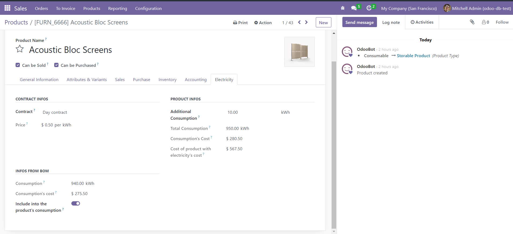

In order to be able to use the extension, you will have to download/update the electricity management base module. This extension is FREE with the purchase of the base module. Just add this extension to cart, and you'll see the main app being added automatically and this one becoming free.
This extension will enables you to incorporate your production process into your electricity management app. Electricity consumption of a product can now be computed from its bill of material.
If your product have a bill of material related, a new section will appear in the electricity tab of the product. In this section you will see displayed to total consumption and cost caused by the products in the bom.
If you decide to include it in your product consumption, you will have the choice to include an additional consumption if needed, and the total one will be computed with the correct price. You will also be able to print a report to see a summary of the bom's consumption.
